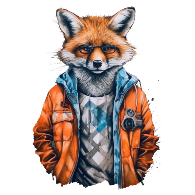

The Grapes are Sour
Once upon a time, a hungry fox was roaming around here and there searching for food. Because of hunger, he was feeling weak and tired. Fortunately, he came to a garden where he saw a grape-vine laden with bunches of grapes they looked quite ripe and juicy. The fox looked at the grapes with longing eyes and licked his chops. But the bunches were too high for him and he was feeling weak. So he sat down for a while to take some rest. On feeling refreshed, he jumped as high as he could, to get at the grapes. But he failed to reach them.
Then he again rested for some time and made another bold attempt, but was unlucky for the second time.Forced to give up trying anymore, he just walked away and instead of accepting his failure, he remarked “the grapes appeared to be ripe and juicy, but now I see them to be quite sour.” This story, thus, proves that, people generally hate what they can’t get.
Moral:
It is natural for us to dislike or scorn something that is not within our reach.